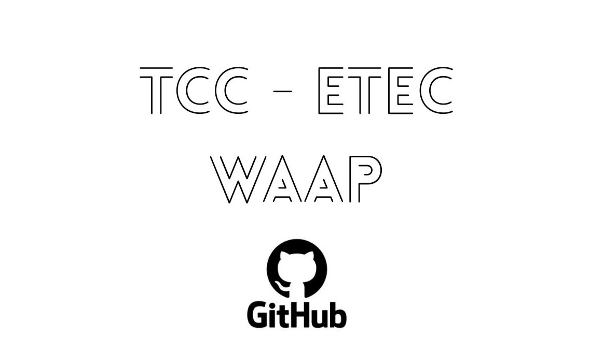
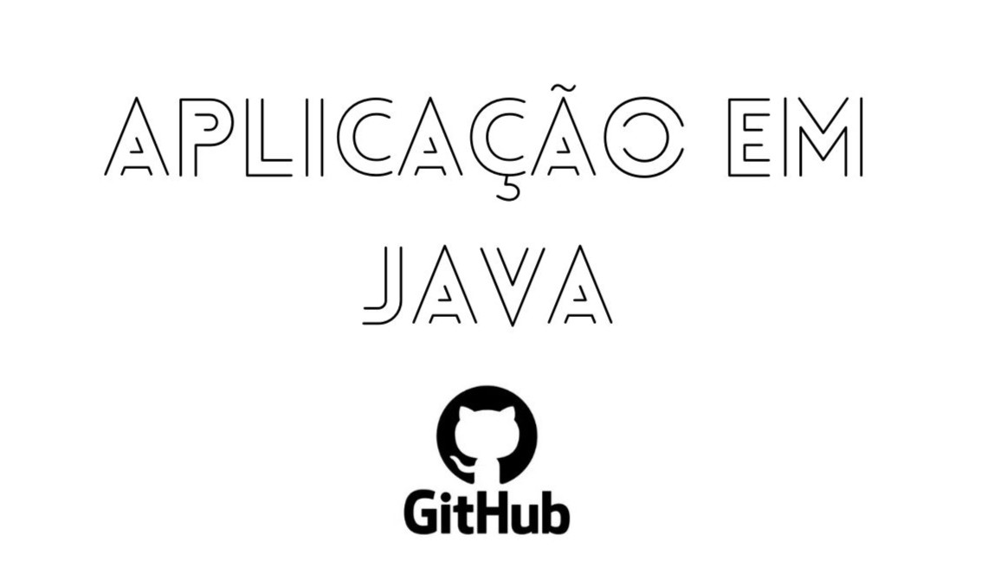
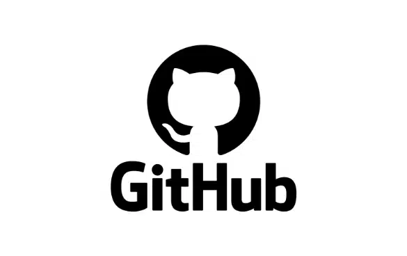

Bem-vindo ao meu portfólio
Vitor Leon
Profissional formado em Análise e Desenvolvimento de Sistemas pela ETEC de Itaquaquecetuba, com formação complementar em Python pelo SENAI de Suzano.
Atualmente cursando o 8º semestre de Sistemas de Informação na Universidade de Mogi das Cruzes (UMC). Atuo como Programador na Nova Presto, desenvolvendo e
mantendo sistemas utilizando as linguagens Delphi, PHP e HTML, além de gerenciamento e modelagem de banco de dados com MySQL. Também sou responsável pelo
suporte técnico interno, oferecendo apoio aos colaboradores na utilização dos sistemas e na resolução de demandas relacionadas à área de tecnologia.
Projetos Desenvolvidos

TCC - Etec
Web site desenvolvido para estimular a adoção de animais e assim diminuir o numero de compras de pets WAAP - Não compre, Adote!
Ver Projeto
Learning Programming
Web site desenvolvido para ajudar alunos a melhorar e aprender novas taticas, metodos de programação, tendo videos aulas gravadas !
Ver Projeto
Aplicação em Java
WAplicação em java na qual o intuito de aprendizagem foi colocado em pratica e metados CRUD, em java com DAO (Objeto de acesso a dados)
Ver Projeto